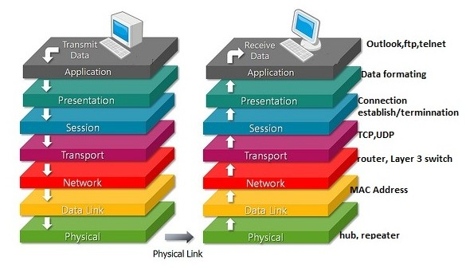

Health Information Technology Systems
Introduction & Overview: Components of HIT Systems
Healthcare Information Technology (HIT) systems are complex, multi-layered environments designed to capture, store, exchange, and analyze health data to improve patient care and organizational efficiency. Core components include electronic health records (EHRs) for clinical documentation, clinical decision support systems (CDSS) for evidence-based recommendations, picture archiving and communication systems (PACS) for imaging, laboratory and pharmacy systems for diagnostics and medication management, and enterprise data warehouses for analytics and population health. Together, these subsystems form an ecosystem where interoperability, usability, security, and regulatory compliance (e.g., HIPAA) are critical to success.
Overview of Information Exchange in HIT Systems
Information exchange in Health Information Technology (HIT) systems refers to the electronic movement of health-related data across organizations, providers, and patients to support clinical care, public health, and research. Effective exchange requires interoperability, standardization, and governance frameworks to ensure data accuracy, consistency, and timeliness. The integration of electronic health records (EHRs), clinical decision support systems, and patient portals has expanded the scope of exchange. However, challenges persist in semantic alignment, data fragmentation, and balancing data sharing with privacy safeguards.
The Effectiveness and Meaningful Use of HIT System
The concept of “meaningful use” emerged from U.S. policy initiatives (e.g., HITECH Act) to ensure that HIT adoption leads to improved patient outcomes, enhanced care coordination, and reduced disparities rather than just digitization. Effectiveness is measured by improved quality, safety, and efficiency of care; increased patient engagement; and the capacity to support population health. Evidence shows that HIT can reduce medical errors and streamline workflows, but inconsistent implementation, clinician burden, and interoperability gaps remain barriers to realizing full value.
ISO Open Systems Interconnection (OSI)
The Open Systems Interconnection (OSI) model, introduced by the International Organization for Standardization (ISO) in 1984, is a conceptual framework that provides a universal set of standards for communication across networks. Its purpose is to enable interoperability among heterogeneous systems—different devices, software, and applications built by different vendors—by breaking down complex networking processes into manageable, standardized layers. This abstraction makes it possible for systems to communicate seamlessly, regardless of differences in design or implementation. Today, although modern networks often rely on the simpler Transmission Control Protocol/Internet Protocol (TCP/IP) model, the OSI framework remains the most influential reference for understanding, designing, and teaching communication architectures. At its core, the OSI model is divided into seven abstraction layers, each representing a specific set of functions:

Physical Layer – Responsible for the raw transmission of bits across a physical medium, such as copper wires, fiber optics, or radio frequencies. It deals with voltages, signal timing, data rates, and hardware specifications.
Data Link Layer – Ensures reliable point-to-point transfer by grouping raw bits into frames, detecting and possibly correcting transmission errors, and managing access to the physical medium. Ethernet is a common example at this layer.
Network Layer – Handles logical addressing, routing, and packet forwarding across interconnected networks. The Internet Protocol (IP) is the most prominent protocol here.
Transport Layer – Provides end-to-end communication, ensuring data integrity, error recovery, sequencing, and flow control. Transmission Control Protocol (TCP) and User Datagram Protocol (UDP) are common transport protocols.
Session Layer – Establishes, manages, and terminates sessions between applications. It coordinates ongoing exchanges and manages dialogue control.
Presentation Layer – Translates data into a format usable by the application layer, ensuring proper syntax, encoding, compression, and encryption. For example, it enables translation between different character sets such as ASCII and Unicode.
Application Layer – The closest layer to the end-user, providing network services to applications such as email, file transfer, web browsing, and electronic health record (EHR) access.
Communication within the OSI model flows in a layered, hierarchical manner. Each layer depends on the functionality of the layer below it while providing enhanced services to the layer above it. Data passed down the stack is encapsulated with headers (and sometimes trailers) appropriate to each layer, while data moving up the stack is decapsulated. Importantly, each layer only communicates directly with its immediate neighbor, but through abstraction, higher layers remain insulated from the complexities of hardware, protocols, and vendor-specific implementations. This separation ensures system independence, scalability, and interoperability.
The model not only describes communications at the lowest level—transmitting bits across a medium—but also extends to the highest abstraction of data exchange within distributed applications. Each layer has well-defined semantics, functions, and interfaces, creating a modular system architecture. In practice, communication protocols such as Hypertext Transfer Protocol (HTTP), Secure Sockets Layer/Transport Layer Security (SSL/TLS), and Internet Protocol (IP) can be mapped to specific OSI layers, providing developers and engineers with a logical framework for designing and debugging systems.
Despite its strengths, the OSI model is primarily a theoretical reference, not an exact blueprint for real-world implementation. Many modern protocols blend functions from multiple layers (e.g., HTTP over TLS blurs application and presentation responsibilities), and in practice, the lines between layers are often blurred to reduce overhead and improve efficiency. For instance, the widely used TCP/IP model condenses the OSI layers into four functional groups: Link, Internet, Transport, and Application. Some OSI layers, such as the session and presentation layers, do not have direct counterparts in all implementations.
Nevertheless, the OSI model’s enduring significance lies in its pedagogical and conceptual clarity. It provides an unparalleled “big picture” view of networking, offering students, researchers, and practitioners a structured way to understand the interactions of hardware, protocols, and applications. In healthcare information technology, the model is particularly useful for conceptualizing how data flows from physical medical devices, through hospital networks, and into interoperable electronic health records (EHRs). Its principles help highlight where privacy and security controls must be applied (e.g., encryption at the presentation layer, authentication at the application layer), and how standards like Health Level Seven (HL7) and Fast Healthcare Interoperability Resources (FHIR) rely on lower-level protocols to function.
Standard-setting organizations (SSOs)/Standards Developing Organizations (SDOs)
Standard-setting organizations (SSOs)/Standards development organizations (SDOs) are formal bodies that create, maintain, and disseminate technical specifications to ensure interoperability, quality, and consistency in Health Information Technology (HIT). These organizations harmonize global standards, but adoption challenges remain due to overlapping frameworks and varying implementation across healthcare systems. Key examples include:
| SDO | Domain / Focus |
|---|---|
| Health Level Seven International (HL7) | Clinical & administrative data exchange standards (e.g., HL7 v2.x, CDA, FHIR) |
| Integrating the Healthcare Enterprise (IHE) – not always strictly an SDO but interoperability profile initiative | Develops integration profiles to enable interoperability of systems (vendors, settings) |
| Clinical Data Interchange Standards Consortium (CDISC) | Standards for clinical research data, interchange, regulatory submission |
| American National Standards Institute (ANSI) | Accreditation of SDOs; coordination of U.S. standards ecosystem including healthcare |
| International Organization for Standardization (ISO) | International standards; includes health informatics technical committees (e.g., ISO/TC 215) |
| Association for the Advancement of Medical Instrumentation (AAMI) | Standards for medical devices, interoperability, and safety (e.g., infusion pumps, sterilization, device usability) |
| Clinical and Laboratory Standards Institute (CLSI) | Laboratory testing & diagnostics standards |
| Institute of Electrical and Electronics Engineers (IEEE) | Standards such as IEEE 11073 for medical device communication and interoperability. |
| International Electrotechnical Commission (IEC) | Global standards for electrical, electronic, and biomedical technologies (e.g., IEC 60601 for medical electrical equipment safety) |
| American Society for Testing and Materials International (ASTM International) | development and delivery of voluntary consensus standards |
| International Health Terminology Standards Development Organisation (IHTSDO) also trading as SNOMED International | Clinical terminology standard (SNOMED CT) for EHRs |
| Health Industry Business Communications Council (HIBCC) | Standards for supply-chain, device identification, labeling in healthcare |
| Accredited Standards Committee X12 (ASC X12) | Electronic data interchange (EDI) standards including healthcare claims/transactions |
Designated Standards Maintenance Organizations (DSMOs) are organizations named by the Secretary of Health and Human Services (HHS) to maintain standards adopted under HIPAA and to receive and process requests to adopt new standards or modify existing standards. CMS publishes a list of advisory groups, DSMOs, and non-DSMOs that help HHS to develop Administrative Simplification standard.
Health Information Exchange
Health Information Exchange (HIE) refers to the electronic sharing of patient health information across organizational, regional, and national boundaries. Exchange models include centralized repositories, federated architectures, and hybrid approaches. HIEs aim to improve continuity of care, reduce duplication of services, and support public health functions such as disease surveillance. Benefits include faster access to patient records, reduced costs, and improved clinical decision-making. Barriers include data quality issues, long-term sustainability, and the need for trust and governance among participating institutions.
Basic Health Data Standards
Electronic Health Record (EHR) systems are not stand-alone platforms; they operate within a complex ecosystem of supporting standards that ensure interoperability, reliability, safety, and usability. These standards complement the core EHR functional models by addressing specific domains such as terminology, imaging, laboratory exchange, security, data provenance, and device integration. Together, they allow EHRs to function as integrated hubs of healthcare data, supporting both clinical care and secondary uses such as research, quality improvement, and public health reporting.
Terminology and Coding Standards. Standardized vocabularies and classification systems enable consistent recording and interpretation of clinical concepts across systems. Without these, data exchange would be fragmented and prone to semantic errors. Examples include:
Systematized Nomenclature of Medicine – Clinical Terms (SNOMED CT) for standardized clinical terminology.
International Classification of Diseases (ICD) for diagnostic coding (maintained by the World Health Organization).
Logical Observation Identifiers Names and Codes (LOINC) for laboratory test and clinical observation identifiers.
Current Procedural Terminology (CPT) for medical procedures.
RxNorm, developed by the U.S. National Library of Medicine, for normalized drug names and codes.
Imaging Standards. Medical imaging is central to diagnosis and treatment, and its integration with EHRs requires specialized standards.
Digital Imaging and Communications in Medicine (DICOM): Standard for handling, storing, and transmitting medical images (radiology, cardiology, pathology, etc.), along with associated metadata.
IHE Radiology Profiles: Build upon DICOM to ensure interoperability across imaging modalities and Picture Archiving and Communication Systems (PACS).
Laboratory and Diagnostic Reporting Standards. Laboratory data is among the most frequently exchanged categories of health information.Laboratory data is among the most frequently exchanged categories of health information.
HL7 Version 2.x Messaging Standard: Defines message structures for lab orders and results, admission-discharge-transfer (ADT) data, and clinical observations.
IHE Laboratory Profiles: Enhance HL7 messaging to enable plug-and-play interoperability between laboratory information systems (LIS) and EHRs.
LOINC integration: Ensures that test identifiers are standardized across labs and health systems.
Security and Privacy Standards. Safeguarding sensitive health data within EHR systems requires adherence to internationally recognized information security standards.These standards collectively ensure that EHR applications are resistant to cyber threats, compliant with regulations (e.g., HIPAA in the U.S., GDPR in the EU), and trusted by patients and providers alike.
ISO/International Electrotechnical Commission (IEC) 27001: International standard for information security management systems.
National Institute of Standards and Technology (NIST) Special Publication 800-53: U.S. security and privacy controls for federal information systems.
Transport Layer Security (TLS): Protocol ensuring secure data transmission.
OAuth 2.0 and OpenID Connect: Authorization and identity management frameworks increasingly used in modern FHIR-based APIs.
Data Provenance and Integrity Standards. As data moves across systems and is reused for research or clinical decisions, tracking its origin and ensuring integrity is essential.
World Wide Web Consortium (W3C) Provenance (PROV) Standard: Provides a framework for representing and exchanging metadata about data origins, authorship, and transformations.
HL7 FHIR Provenance Resource: Defines how provenance metadata is attached to clinical resources, ensuring accountability and auditability.
Together, these standards ensure that EHRs are not isolated data silos but dynamic systems capable of supporting patient care, clinical research, public health, and emerging digital health applications. Harmonization and consistent adoption of these standards remain a critical challenge, but they are essential to building a learning health system that is safe, efficient, and patient-centered.
Health Data Interchange Standards
These standards support interoperability, clinical decision support, and secondary research. Their utility depends on accurate implementation, regular updates, and consistent mapping across systems.
Health data interchange standards define structured, computable formats for exchanging healthcare information.
Common Data Models (CDMs), such as the Patient-Centered Outcomes Research Network (PCORnet) CDM and the Observational Medical Outcomes Partnership (OMOP) CDM, provide harmonized schemas for integrating multisite data used in research and quality improvement.
Fast Healthcare Interoperability Resources (FHIR), developed by Health Level Seven International (HL7), is a modern web-based standard using Representational State Transfer (RESTful) Application Programming Interfaces (APIs) and modular “resources” for data exchange.
Together, CDMs and FHIR enable cross-institutional collaboration and integration of clinical and research data. Implementation challenges include governance, semantic alignment, and the complexity of mapping legacy datasets.
EHR Functional Model Standards
The Electronic Health Record System Functional Model (ISO/HL7 10781) provides a standardized reference for the capabilities that EHR systems should support. These include direct care functions (documentation, order management, decision support), administrative functions (billing, scheduling), interoperability functions (data exchange, standards compliance), and compliance functions (privacy, security, auditing). Functional models help guide vendor development, certification programs, and international harmonization. Customization for diverse healthcare settings remains an ongoing challenge.
Protecting Privacy, Security, and Confidentiality in HIT Systems
Protecting sensitive health information is a core requirement for HIT systems. Regulatory frameworks include the Health Insurance Portability and Accountability Act (HIPAA) in the United States and the General Data Protection Regulation (GDPR) in the European Union. Technical and organizational safeguards include data encryption, multi-factor authentication, role-based access control, and audit logging. Privacy protections extend to de-identification techniques, informed consent management, and data minimization practices. Trust in HIT requires balancing data utility for care and research with confidentiality and patient rights. Key challenges involve cyber threats, insider misuse, and enabling interoperability without compromising compliance.